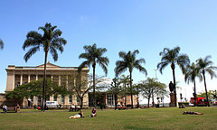

<% @eventhome = @page.directory.split(File::SEPARATOR)[0..1].join(File::SEPARATOR) %>
** Dates:**<%= render(:partial => "/#{@eventhome}/_target_date") -%>** in **<%= render(:partial => "/#{@eventhome}/_target_location") -%>

Registrations open - Get them quick !
p.s. Winter in Brisbane...
